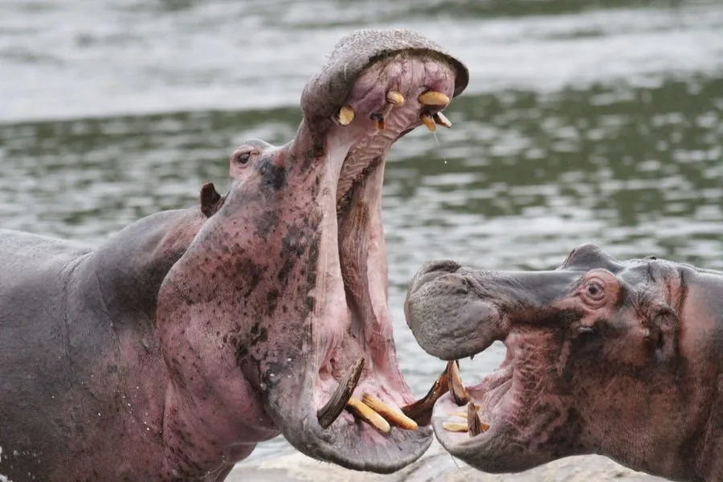

哺乳动物 · 动物界
河马 Hippopotamus amphibius

半水生的非洲巨兽，皮肤能分泌红色黏液来防晒抗菌，白天泡在水里、夜间上岸吃草，领地意识极强。
- 分类
- 门脊索动物门纲哺乳纲目偶蹄目科河马科属河马属
- 栖息环境
- 河流、湖泊、沼泽等缓流水域，需邻近草场
- 地理分布
- 撒哈拉以南非洲的河流与湖泊，从尼罗河到南非的湿地
- 保护级别
- IUCN 易危（VU）
物种志
河马体长 3.3–4.5 米，肩高约 1.5 米，体重 1300–2000 kg，体形粗圆，四肢短而粗壮。它的皮肤厚而光滑，几乎无毛，会分泌淡红色的油状黏液，可防晒并抑制细菌；眼睛、耳朵和鼻孔都位于头顶，便于身体浸在水中时观察和呼吸。
河马白天成群泡在河流、湖泊与沼泽中，夜晚才上岸吃草，一夜可吃掉 40–60 kg 草。它虽然以素食为主，却拥有极强的领地意识，成年雄性的犬齿可长约 40 cm，张口角度可达 150°，是非洲造成人类伤亡最多的大型动物之一。雌性妊娠期约 8 个月，每胎 1 仔，幼仔在水中出生并能在水下吸奶。野生河马分布于撒哈拉以南非洲，偷猎与水域污染正使部分种群下降。
形态与习性
- 食性夜间上岸食草，一夜约 40–60 kg
- 体长3.3–4.5 m，肩高约 1.5 m
- 体重1300–2000 kg
- 寿命野外 40–50 年
- 繁殖妊娠期约 8 个月，每胎 1 仔，水中分娩
- 活动节律白天泡水，夜间上岸取食
- 张口角度可达 150°，下犬齿长约 40 cm
趣味知识
- 河马皮肤分泌的红色黏液能防晒、抑菌，常被误认为血汗。
- 河马的眼睛、耳朵和鼻孔都在头顶，身体浸水时也能呼吸观察。
- 河马能张开嘴近 150°，下犬齿可长达 40 cm，咬合力惊人。
- 河马主要在夜间上岸吃草，一夜可吃掉 40–60 kg。